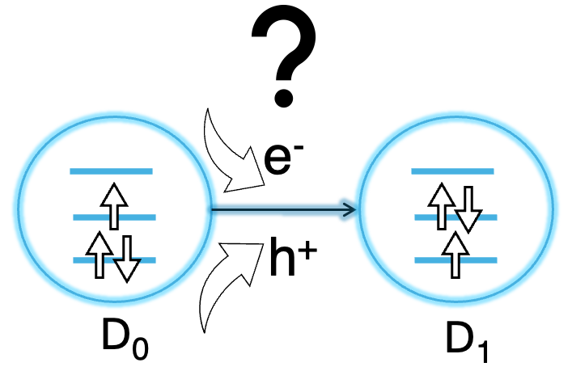

Personal Blog of PK
Thoughts on chemistry, computation, science,
research, technology, and whatever else seems
interesting enough to write about.
BLOG #001 · 28 July 2026 · 14:59 BST (UTC+1)
Radical OLEDs: A Different Route to Highly Efficient Light
How does an organic radical actually reach the excited state
from which it emits light? In our recent preprint, we set out
to map this microscopic journey.
OLEDs, electrons, and a little quantum mechanics
OLEDs are now part of everyday life. They illuminate the pixels
in smartphones, televisions, watches, and many other displays.
But behind every glowing pixel lies an interesting quantum
mechanical problem: when positive and negative charges meet
inside an organic material, which electronic state do they form,
and can that state efficiently produce light?
In a conventional closed-shell fluorescent molecule, all
electrons are initially paired. When an electron and a hole
recombine, spin statistics lead to the formation of both
singlet and triplet excitons.
Approximately 25% are expected to be singlets and 75% triplets.
Ordinary fluorescence can use the singlet excitons efficiently,
but emission directly from the triplet state is spin-forbidden.
Modern OLED technologies have developed clever ways around this
problem. Phosphorescent emitters and thermally activated delayed
fluorescence (TADF), for example, can harvest triplet excitons.
Organic radicals offer something fundamentally different.
What makes a radical special?
A radical contains an unpaired electron.
This means its electronic structure is different from that of
a conventional closed-shell molecule.
Instead of describing the relevant ground and excited states as
singlets and triplets, organic radicals can have a doublet ground
state, D0, and an emissive doublet excited state,
D1.
D1 → D0 + light
Importantly, this doublet-to-doublet transition can be
spin-allowed.
Radical OLEDs therefore bypass the conventional singlet–triplet
exciton constraint rather than trying to recover triplet excitons
after they have formed.
Experiments have demonstrated nearly 100% doublet-exciton
formation in radical OLEDs. If competing non-radiative processes
can be sufficiently suppressed, this means that radical emitters
can, in principle, approach
100% internal quantum efficiency (IQE).
But there was still a surprisingly basic question
We know that the D1 state can emit light.
But under electrical excitation,
how is D1 actually formed?
An OLED does not simply place a molecule directly into its
emissive state. Electrons and holes move through the material,
charges can become localised on different molecules, and several
charge-transfer and recombination pathways may be possible.
So I like to think of D1 as the destination.
We know where the light comes from.
But what microscopic road takes the radical there?
Mapping the possible routes
In our recent preprint, Timothy J. H. Hele and I investigated
this problem using quantum-chemical calculations together with
Marcus-type electron-transfer modelling.
We studied three TTM-based radical emitters:
TTM-1Cz, TTM-3PCz, and TTM-3NCz,
considering them in a minimal CBP-host environment.
Rather than assuming a particular mechanism from the beginning,
we compared several competing possibilities:
-
anion-mediated pathways,
-
cation-mediated pathways,
-
charge–charge annihilation pathways,
-
and pathways involving electronically excited charged species.
For each route, the important question is not simply whether it
can be drawn on paper. The energetics must be favourable and the
corresponding electron-transfer process must occur at a
competitive rate.
One pathway consistently stands out
Across the radicals we studied, our calculations point toward an
anion-mediated charge-recombination mechanism
as the most consistently plausible route to forming the emissive
D1 state.
D0
→ Radical Anion
→ D1
→ Light
In simple terms, the neutral radical first accepts an electron,
producing a negatively charged radical species.
Subsequent recombination with a positive charge can then populate
the excited D1 state from which light is emitted.
Our calculations also suggest that excited-anion pathways could
contribute indirectly. Higher-lying electronic states can first
be populated and subsequently relax toward D1.
In contrast, the cation-mediated routes we examined were
generally less favourable, while competing processes that return
charged species directly to the non-emissive ground state were
kinetically suppressed in our calculations.
Why does knowing the mechanism matter?
Finding a molecule that emits efficiently is useful.
Understanding why it works is much more powerful.
Once we know the pathways responsible for producing
D1, we can begin asking design questions rather than
relying only on trial and error.
Can the electron affinity of the radical be tuned to favour
productive anion formation?
Can the surrounding host material be chosen to make the desired
charge-transfer process faster?
Can molecular substitution increase the probability of reaching
D1 while suppressing pathways that waste the injected
electrical energy?
Ultimately, understanding the mechanism provides a bridge between
fundamental electronic-structure theory and the rational design
of better OLED materials.
A different way of making light
What I find particularly fascinating about radical OLEDs is that
they do not merely improve on the usual closed-shell picture.
They change the electronic-state landscape altogether.
The unpaired electron gives us access to doublet states, and the
emissive D1 → D0 transition provides a
spin-allowed pathway for light emission.
And we can now begin to connect the electrical operation of the
device to that final photon through a microscopic sequence:
Charge injection
→ Anion formation
→ Charge recombination
→ D1
→ Photon
There is still much to understand, particularly when moving from
molecular models toward the complexity of a complete working
device.
But having a mechanistic picture gives us something extremely
valuable: a set of physical principles that can eventually guide
the design of the next generation of radical emitters.
Preprint

Mechanistic Origins of D1 Excited-State Formation
in Radical-Based Organic Light-Emitting Diodes
Prashant Kumar and Timothy J. H. Hele
Read the preprint on ChemRxiv →
BLOG #002 · 24 August 2026 · 12:20 BST (UTC+1)
From Preprint to Publication:
Testing a Radical OLED Mechanism
A scientific paper rarely finishes when the first manuscript is written.
Peer review asks whether the conclusions survive when the assumptions
behind them are examined more closely. Our recent work on the formation
of the emissive D1 state in radical OLEDs has now completed
that journey from preprint to publication.
In the first blog post on this site, I discussed the central question
behind the work:
how does an electrically driven organic radical actually reach the
emissive D1 state?
Our calculations compared several possible charge-transfer and
recombination mechanisms and pointed toward an
anion-mediated pathway as the most consistently
plausible route.
The work is now published in
The Journal of Physical Chemistry A.
Publication was not simply the final step.
Peer review provided an opportunity to test which parts of the
mechanistic picture were robust, which quantities required more
careful interpretation, and where the limitations of the computational
model needed to be made clearer.
What did peer review challenge us to think about?
Three particularly useful scientific questions emerged during the
review process.
They concerned:
-
the effect of the surrounding OLED host environment on the calculated
reaction energetics,
-
how sensitive the calculated electron-transfer rates might be to the
particular molecular configuration used to calculate the electronic
coupling,
-
and how Marcus and Marcus–Levich–Jortner rate calculations should be
interpreted when some processes lie very deep in the Marcus inverted
regime.
These questions did not simply require textual clarification.
In one case they led to additional calculations, while in the others
they pushed us to be more explicit about what the numerical results can
— and cannot — tell us.
Question raised during peer review
What happens to the calculated reaction free energies when the
surrounding OLED environment is taken into account?
Testing the effect of the host environment
Our systematic mechanistic comparison had been performed using
gas-phase cluster calculations.
That provides a consistent framework for comparing many electronic
states and pathways, but a real OLED is not a collection of molecules
floating in vacuum. The surrounding host material can polarize in
response to charged states and therefore alter their relative energies.
To test this, we carried out an additional set of calculations using
a CBP-like dielectric environment.
The relevant structures were treated using
PBE0/6-31G(d,p) together with the conductor-like
polarizable continuum model, CPCM. The host response was represented
using:
ε = 3.0
and
ε∞ = 2.8
We also performed vibrational-frequency calculations for the structures
that could be successfully optimized so that the corresponding Gibbs
free energies could be compared with the gas-phase results.
The environment did matter.
Several reaction free energies changed appreciably, and charged states
were generally stabilized by the dielectric treatment.
But the important result was that the
qualitative mechanistic picture remained unchanged.
The anion-mediated pathways remained energetically accessible.
There was also an important practical limitation.
Some higher-lying and charged electronic states could not be converged
reliably in the dielectric model. This meant that we could not construct
a complete, internally consistent solvent-phase dataset for every
proposed pathway.
We therefore retained the gas-phase calculations for the systematic
comparison of all mechanisms and used the additional dielectric
calculations as a test of how strongly host polarization could influence
the energetics.
What we learned:
absolute reaction energies can be sensitive to the molecular
environment, but the principal mechanistic conclusion survived this
additional test.
Question raised during peer review
How much do the calculated electron-transfer rates depend on the
particular host–emitter molecular configuration?
A single molecular geometry is not an amorphous OLED film
Marcus-type electron-transfer calculations require an electronic
coupling between the donor and acceptor states.
That coupling is strongly influenced by molecular geometry:
intermolecular separation, relative orientation, and orbital overlap
can all change its magnitude.
The configuration used in our calculation was not selected randomly.
It came from a structural search for low-energy CBP–radical
configurations and was subsequently optimized before calculating the
electronic coupling.
Nevertheless, it still represents
one low-energy local arrangement.
A real amorphous OLED contains a distribution of intermolecular
configurations, and those different configurations can produce
different electronic couplings.
This matters because in the nonadiabatic Marcus expression the rate
depends quadratically on the electronic coupling:
k ∝ |VDA|2
Different configurations can therefore give different absolute rate
constants. They can also alter other quantities, including reaction
free energies and reorganization energies.
This led us to make an important distinction much more explicit in the
published work:
The calculated absolute rate constants should be regarded as
configuration- and method-dependent quantities rather than unique
predictions for an entire amorphous OLED film.
Our mechanistic conclusions instead rely on comparing the
broad energetic and kinetic regimes of the competing
pathways using a consistent computational framework.
Question raised during peer review
If several processes are predicted to have essentially vanishing
Marcus-type rates, how literally should those calculated rates be
interpreted?
When a calculated rate should not be treated as a literal rate
This was perhaps the most conceptually important point raised during
review.
Some of the electron-transfer processes investigated in the work fall
extremely deep into the
Marcus inverted region.
In such cases, Marcus or MLJ calculations can predict rates that are
effectively zero.
It would be tempting to take those numbers literally.
We do not.
When a system lies far outside the regime where the assumptions of the
model are expected to be quantitatively reliable, the exact numerical
rate — and particularly the fine ordering of several extremely small
rates — should be treated with caution.
The role of Marcus-type theory in this study is therefore better viewed
as a common mechanistic framework.
It helps distinguish between processes occupying very different kinetic
regimes:
-
pathways that remain comparatively accessible,
-
pathways that encounter substantial activation barriers,
-
and processes that are pushed extremely far into the inverted region
and are therefore strongly suppressed within the model.
The conclusion is therefore not:
“This reaction literally occurs at the exact calculated rate.”
Rather, the useful mechanistic statement is:
“Within a consistently applied theoretical framework, this pathway
occupies a very different energetic and kinetic regime from the
competing alternatives.”
That distinction is important whenever a relatively simple kinetic
theory is being applied to complex open-shell molecular systems.
So what changed between the preprint and the published paper?
The central mechanistic picture did not need to be replaced.
Instead, peer review made the work more carefully qualified and,
I think, scientifically stronger.
The published work now includes:
-
an explicit computational test of the influence of CBP host
polarization on reaction free energies,
-
a clearer discussion of how intermolecular configurations influence
electronic couplings and therefore absolute rate constants,
-
and a stronger statement about the limits of interpreting
Marcus/MLJ calculations quantitatively in extreme kinetic regimes.
The broader lesson: a model is useful partly because of its limits
Computational chemistry is sometimes presented as if the objective were
simply to calculate a number with as many decimal places as possible.
Mechanistic modelling is rarely that simple.
A calculated reaction energy depends on the environment we choose to
represent. An electron-transfer rate depends on molecular geometry,
electronic coupling, reorganization energy, driving force, and the
assumptions built into the kinetic theory.
Recognising those dependencies does not make a model useless.
It tells us what kind of question the model is actually capable of
answering.
In this case, the strongest conclusion is not a single absolute
rate constant.
It is the emergence of a consistent mechanistic picture from the
combined electronic-structure, energetic, and kinetic analysis:
anion-mediated charge recombination remains the most plausible
route among the competing mechanisms examined for forming the
emissive D1 state.
Mechanistic hypothesis
→
computation
→
peer-review challenge
→
additional testing
→
refined interpretation
Why I found this part of the process useful
The most useful review questions are not necessarily those that ask for
another calculation simply for the sake of adding more data.
They are the questions that expose an assumption and ask:
how much does the conclusion depend on it?
Does the mechanism survive when environmental polarization is included?
Are the calculated rates properties of the material, or of the
particular molecular configuration used in the model?
When does a kinetic model provide a meaningful number, and when is its
real value instead the qualitative physical picture that it reveals?
Working through those questions made the distinction between
prediction and interpretation
considerably sharper.
And that is ultimately what I find most useful about computational
chemistry: not only calculating what might happen, but understanding
why one physical pathway is more plausible than another.
Published Paper
The work discussed in Blog #001 as a ChemRxiv preprint
is now published in
The Journal of Physical Chemistry A.
DOI:
10.1021/acs.jpca.6c04284
Read the published paper at ACS →
View the earlier ChemRxiv preprint →
BLOG #003 · 22 October 2026
Following OLED Degradation in Motion
Understanding why an OLED material degrades is not simply a question
of finding its weakest bond. A molecule may look vulnerable from a
static energetic picture yet behave differently once an excited state
is actually allowed to evolve in time. In our recent work, we combined
high-level electronic-structure calculations, non-adiabatic molecular
dynamics, and machine learning to examine degradation from both
perspectives.
This paper is also personally special to me for another reason:
it is my first paper as a corresponding author.
I am particularly happy about that milestone. For me, corresponding
authorship represents more than a different symbol beside a name on a
paper. It feels like another small step toward developing greater
scientific independence: identifying a problem, helping shape how it
should be attacked, bringing different computational approaches
together, and taking responsibility for the scientific story that
emerges.
The central lesson from this work is simple:
degradation cannot always be understood from a static molecular
picture alone.
Thermodynamics tells us where a molecule may be vulnerable.
Dynamics tells us whether — and how — it actually gets there.
Why look at degradation in OLED host materials?
Organic light-emitting diodes have developed enormously over the past
few decades. Modern OLED architectures can achieve impressive
efficiencies through phosphorescent emitters, thermally activated
delayed fluorescence, hyperfluorescence, and several newer strategies
for manipulating excited states.
But high efficiency is only one part of the problem.
A material also needs to survive.
The molecules inside an operating OLED are repeatedly exposed to
electrons, holes, excitons, and highly energetic states produced by
processes such as exciton–polaron annihilation and exciton–exciton
annihilation.
Under these conditions, chemical bonds that appear perfectly stable in
the neutral ground-state molecule may become substantially more
vulnerable.
Host materials are particularly interesting in this respect. Their role
is often discussed in terms of charge transport and energetic alignment,
but their intrinsic chemical stability is equally important for device
lifetime.
Three molecules, and several possible routes to degradation
We investigated three OLED host materials:
-
TBSO
— 4-(m-tolylsulfonyl)-1,1-biphenyl,
-
DPPCarba
— 9-(3,5-diphenylphenyl)carbazole,
-
and DPPTriphen
— 2-(3,5-diphenylphenyl)triphenylene.
The first part of the study asked a relatively conventional question:
Which bonds become thermodynamically susceptible to dissociation under
the electronic conditions that can occur during OLED operation?
To answer this, we used high-level quantum-chemical calculations to
examine bond dissociation in several electronic situations rather than
considering only the neutral ground-state molecule.
These included the ground state, charged species, the lowest excited
state, and high-energy situations representative of annihilation
processes in an operating OLED.
The static picture: where are the weak points?
Bond dissociation energies provide a very useful first map of molecular
stability.
In our calculations, the three hosts did not behave equally.
DPPTriphen showed the most favourable overall stability
profile, whereas
TBSO emerged as the most degradation-prone of the three.
A particularly important structural weakness in TBSO is associated with
cleavage of its S–aryl bond.
The calculations also revealed an important trend when charge is placed
on these molecules:
The anionic species are generally more vulnerable to bond
dissociation than the corresponding cationic species.
This is significant because degradation inside an OLED cannot be viewed
solely as photochemistry of a neutral molecule. Charge injection and
charge trapping can change the molecular potential-energy landscape and
substantially modify the stability of particular bonds.
The static calculations therefore already provided an informative
hierarchy of potential degradation susceptibility.
But there was a problem.
A low dissociation energy does not tell us the whole mechanism
A static calculation tells us whether a dissociation pathway is
energetically favourable or accessible.
It does not tell us whether the molecule will actually find that pathway
during its excited-state evolution.
Nor does it tell us:
-
how quickly a bond begins to distort,
-
which nuclear motions guide the molecule toward dissociation,
-
whether internal conversion competes successfully with bond breaking,
-
whether the electronically excited molecule reaches another region of
its potential-energy surface first,
-
or whether the dynamically preferred bond-breaking pathway is the same
one suggested by a static stability descriptor.
This distinction became one of the most interesting aspects of the
project.
Static calculations ask:
which dissociation pathways are energetically vulnerable?
Dynamics asks:
which pathways can the excited molecule actually reach as it moves?
Then we let the molecules move
To obtain that dynamical picture, we used
non-adiabatic molecular dynamics (NAMD),
employing fewest-switches surface hopping to follow nuclear motion
together with transitions between electronic states.
This changes the question completely.
Rather than examining isolated stationary structures, we now follow an
electronically excited molecule through time and observe how its bonds
distort while the electronic state itself can change.
For TBSO, the direct NAMD simulations showed that degradation can occur
on an ultrafast, sub-picosecond timescale.
More importantly, the dynamical simulations demonstrated why the
static and dynamic pictures should not simply be treated as
interchangeable.
In some cases, the dissociation behaviour observed during the dynamics
does not reduce to the pathway one might have selected from the static
bond-dissociation picture alone.
Nuclear motion, electronic-state evolution, and access to different
regions of the excited-state landscape all matter.
Static energetics
→
vulnerable bonds
→
excited-state dynamics
→
accessible pathways
→
degradation mechanism
High-energy excitons change the stability problem again
Another important part of OLED degradation is that molecules are not
restricted to their lowest excited state.
Exciton–exciton annihilation, and particularly processes associated
with triplet accumulation, can generate much higher-energy electronic
states.
Once sufficient energy is available, bonds that would ordinarily be
chemically stable can become accessible to dissociation.
In our static analysis,
all three host molecules showed susceptibility under sufficiently
high-energy annihilation conditions.
This is an important reminder that molecular stability in an OLED is
conditional. A molecule that looks robust in its ground state or lowest
excited state may still become vulnerable after energetic
exciton–exciton or exciton–polaron processes.
The dynamics we wanted were also the dynamics we could barely afford
Non-adiabatic dynamics is powerful, but it is computationally expensive.
Every trajectory requires electronic energies and forces to be evaluated
repeatedly as the nuclei move, while the simulation simultaneously
tracks the evolution of the electronic states.
A single trajectory can therefore be expensive.
But degradation is also a statistical problem.
Bond dissociation may be a relatively rare event, and a handful of
trajectories cannot tell us reliably how frequently different outcomes
occur.
This creates an awkward computational situation:
The interesting chemistry requires many trajectories,
but the electronic-structure calculations make many trajectories
prohibitively expensive.
Using machine learning to make the dynamical picture statistically useful
To address this, we trained a fully connected neural-network potential
to reproduce the electronic-structure information needed for the
dynamics.
The objective was not to replace the underlying quantum chemistry with a
black box.
Instead, the quantum-chemical calculations provide the reference data,
while the machine-learning model acts as a much faster surrogate during
trajectory propagation.
This acceleration changed the scale of the dynamical investigation.
We were able to propagate
3519 trajectories to 1 ps
and observe
29 degradation events originating from the first excited
state.
Obtaining this level of sampling using conventional direct NAMD would
have been extremely demanding.
More trajectories are not valuable simply because the number is larger.
They allow us to ask a better mechanistic question:
What degradation pathways emerge from an ensemble of excited molecules,
rather than from one structure or a small number of trajectories?
That statistical perspective is particularly important when the
dynamics identifies dissociation pathways that are not necessarily the
ones that appear most obvious from static descriptors.
Machine learning accelerates the calculation — it does not remove the physics
The machine-learning model also has limitations.
Molecular geometries encountered close to dissociation or in strongly
distorted regions are precisely the configurations that can be difficult
to represent if they are poorly sampled in the training data.
This is especially relevant near unusual geometries and electronically
complicated regions of the potential-energy landscape.
In other words, the model is most trustworthy inside the chemical space
it has learned.
Future development therefore requires an iterative strategy in which the
dynamics itself helps identify where additional quantum-chemical data
are needed.
Active learning provides a natural route toward that goal: identify
poorly represented regions, calculate new reference data there, retrain
the model, and progressively improve the description of degradation
events.
Static versus dynamic is the wrong question
One of the conclusions I like most from this work is that the useful
comparison is not:
“Should we use static calculations or molecular dynamics?”
We need both.
Static calculations provide a systematic and comparatively affordable
way to map thermodynamic susceptibility across different bonds,
molecules, charge states, and electronic states.
Dynamics tells us how that energetic landscape is actually explored as
the excited molecule moves.
Machine learning then makes it possible to sample that dynamical picture
much more extensively.
The three computational layers therefore answer different questions:
-
High-level electronic structure:
where is degradation thermodynamically possible?
-
Non-adiabatic dynamics:
which pathways are actually reached during excited-state motion?
-
Machine-learning-accelerated dynamics:
how frequently do those pathways emerge across a much larger
trajectory ensemble?
Four results that I take away from the study
1. Molecular stability depends strongly on electronic state.
A host that is stable as a neutral ground-state molecule can become
substantially more vulnerable after charging or excitation.
2. Anions deserve particular attention.
In our analysis, anionic species generally showed greater
susceptibility toward dissociation than the corresponding cations.
3. Static descriptors are necessary but not sufficient.
Bond dissociation energies identify thermodynamic weak points, but
explicit dynamics can reveal a different mechanistic preference.
4. Machine learning changes the amount of chemistry we can sample.
By accelerating the expensive electronic-structure component of NAMD,
thousands of trajectories become feasible and rare degradation events
become statistically observable.
What does this mean for designing more stable OLED materials?
The obvious design strategy would be to avoid molecules containing
intrinsically weak bonds.
That remains sensible — but this study suggests that it is not enough.
Stability should ideally be considered across the different electronic
conditions that the molecule may experience in an operating device.
That includes:
-
the neutral ground state,
-
charged states,
-
the lowest electronically excited states,
-
and highly energetic states produced by annihilation processes.
DPPTriphen performs favourably in much of this static comparison, while
TBSO illustrates how a particular chemical linkage can create a much
more accessible degradation channel.
But the dynamical results add the crucial qualification:
stability screening ultimately benefits from knowing not only which
pathways are energetically possible, but which pathways the excited
molecule actually explores.
A personal milestone as well
Beyond the chemistry, this paper means something different to me from my
earlier publications.
It is my
first corresponding-author paper.
Academic independence does not arrive at a single moment, and one paper
certainly does not define it. But there are small milestones along the
way that make the direction of travel more tangible.
For me, this is one of them.
I am especially pleased that the work itself reflects the kind of
computational science I want to keep developing: combining rigorous
electronic-structure theory with molecular dynamics and machine
learning, not because any one of these methods is fashionable, but
because each resolves a different part of a difficult physical problem.
For me, the exciting part is not simply that machine learning makes a
calculation faster. It is that the additional sampling can change the
mechanistic picture we are able to see.
The broader lesson
Computational chemistry often starts from stationary structures because
they give us a clean and interpretable description of molecular
energetics.
Real molecules, however, move.
Excited molecules move on coupled electronic potential-energy surfaces,
change electronic states, explore distorted geometries, and occasionally
find chemical pathways that a static structure does not make obvious.
That is why I think the combination used here is particularly powerful.
Electronic structure
→
thermodynamic stability
→
excited-state dynamics
→
machine-learning acceleration
→
mechanistic understanding
If we want to understand degradation rather than merely rank bond
strengths, we need to connect all of those levels.
Published Paper
The work discussed here is:
In Silico Study of Degradation in Host Molecular Materials for OLEDs
Advanced Theory and Simulations
DOI:
10.1002/adts.70584
Read the paper at Wiley →